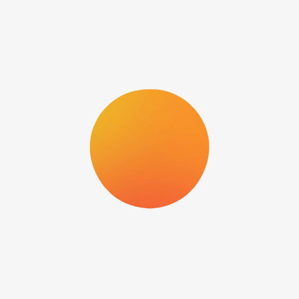
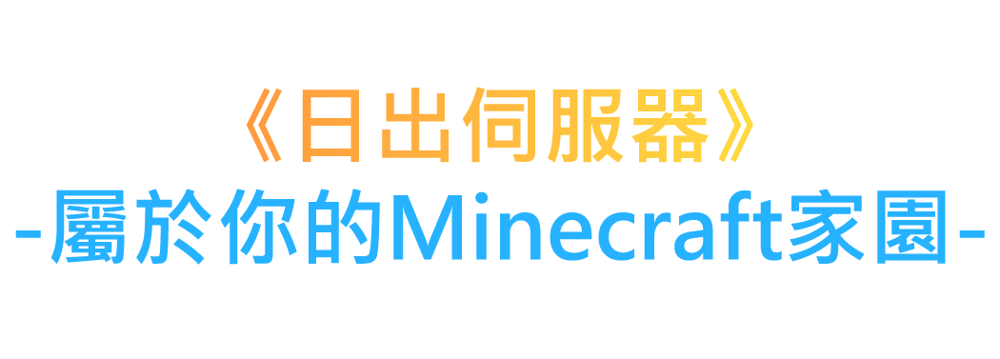
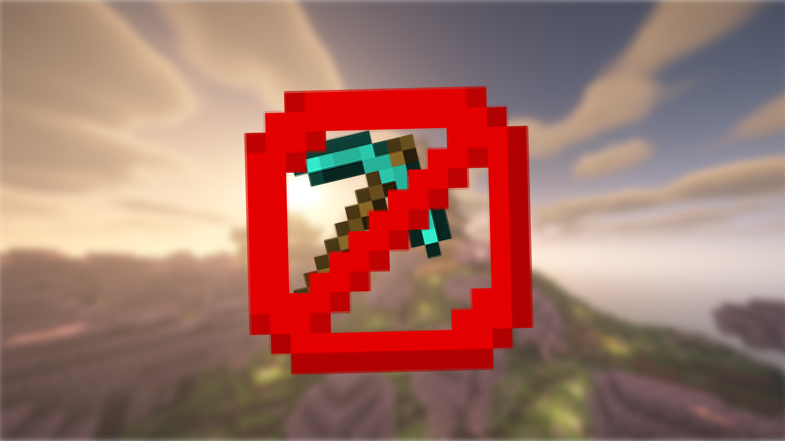
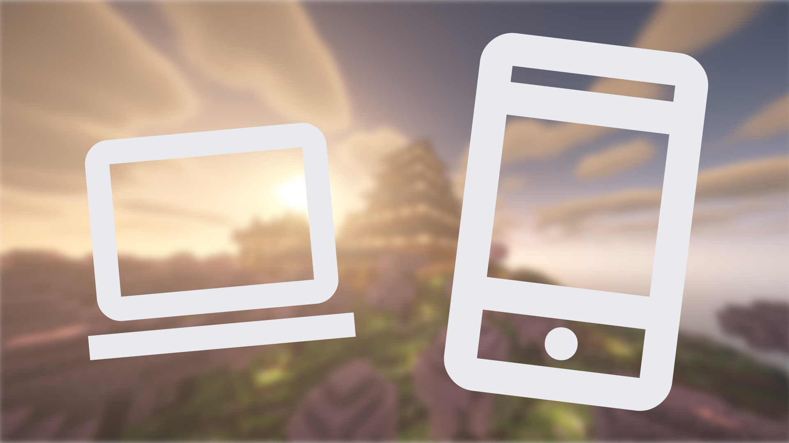

Wiki
Discord
地圖
系統狀態
成員
立即加入！

基本資料
贊助紀錄
登出
Wiki
Discord
地圖
系統狀態
成員
立即加入!
切換至黑色模式
音量控制
基本資料
贊助紀錄
登出

...
位玩家曾加入
...
個領地已建立
sunrisemc.tw
點我複製
我們的特色

領地系統
保護建築不被破壞
Discord連結
隨時隨地與伺服器玩家互動

雙版本聯通
無論你是Java還是基岩玩家都可以遊玩
交易系統
讓您可以輕易兌換物資
活動
舉辦不定期活動
我們是誰?
服主
GoogleDino_TW - 臭腐竹
負責管理全部東西，有任何問題歡迎詢問
副服主
Easonlin1119 - 豬神
負責處理雜務
管理員
SisterCelia - 不知名的小希
機器人維護、玩家糾紛處理
管理員
linchen180 - 凌晨
玩家糾紛處理
連線位置
Java
IP:
版本:
sunrisemc.tw
1.21.8，1.13以上可連線
基岩
IP:
Port:
be.sunrisemc.tw
19132 (預設)
基本資訊
玩家名稱
...
UUID
...
Discord ID
...
贊助紀錄
總贊助金額
...
贊助次數
...
贊助時間
贊助金額
贊助項目
贊助感言